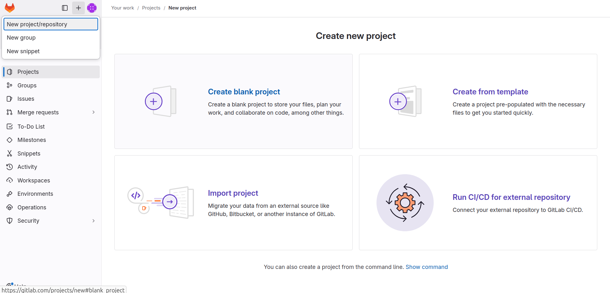

Executing Gradle builds on GitLab CI#
Tip
Top engineering teams using GitLab CI have been able to reduce CI build time by up to 90% by using the Gradle Build Cache. https://gradle.org/training/#build-cache-deep-dive[Register here] for our Build Cache training session to learn how your team can achieve similar results.
Building Gradle projects doesn't stop with the developer's machine. https://en.wikipedia.org/wiki/Continuous_integration[Continuous Integration] (CI) has been a long-established practice for running a build for every single change committed to version control to tighten the feedback loop.
In this guide, we'll discuss how to configure link:https://docs.gitlab.com/ee/ci/[GitLab CI] for a Gradle project hosted on GitLab (GitLab.com, self-managed or dedicated).
Introduction#
GitLab CI is a cloud-based CI solution provider built directly into GitLab, making it an excellent choice for projects hosted on GitLab.
What you'll need#
- A text editor
- A command prompt
- The Java Development Kit (JDK), version 1.8 or higher
- A local Gradle installation to initialize a new Gradle project
- A GitLab instance (any tier, any deployment type)
- A GitLab account on the instance you want to use
Setup a Gradle project on GitLab#
If you have a Gradle project hosted on GitLab, you can skip this step and move directly to Configure GitLab CI
If not, follow these steps to initialize a new Gradle project on GitLab.
Create a new GitLab repository for your project#
Create a new repository named gitlab-ci-gradle-sample via the GitLab user interface.

Clone the repository locally#
$ git clone git@example.gitlab.com:<YOUR-GITHUB-USER>/gitlab-ci-gradle-sample.git
Cloning into 'gitlab-ci-gradle-sample'...
$ cd gitlab-ci-gradle-sample
Initialize the Gradle project and commit to the repository#
Use gradle init to create a fresh Gradle project. You can choose any available options during init, but we recommend choosing "library" as the project type.
Once the project is generated, commit the changes and push to the repository.
Enable Build Scan™ publishing#
Gradle Build Scans are a great way to view your build results and provide valuable insights into your build. To publish Build Scans from GitLab CI, you'll need to pre-approve the Terms & Conditions.
To do so, add the following content to the top of your settings.gradle[.kts] file. GitLab CI sets the "CI" environment variable:
plugins {
id("com.gradle.enterprise") version("3.16.2")
}
gradleEnterprise {
if (System.getenv("CI") != null) {
buildScan {
publishAlways()
termsOfServiceUrl = "https://gradle.com/terms-of-service"
termsOfServiceAgree = "yes"
}
}
}
Test building the project#
The project uses the Gradle Wrapper for building the project. It is a recommended practice for any Gradle project as it enables your project to build on CI without installing the Gradle runtime.
Before asking GitLab CI to build your project, it's useful to ensure that it builds locally. Adding the "CI" environment variable will emulate running the build on GitLab CI.
The following command achieves that:
$ CI=true ./gradlew build
BUILD SUCCESSFUL
Publishing build scan...
https://gradle.com/s/7mtynxxmesdio
If the build works as expected, commit the changes and push to the repository.
Configure GitLab CI#
You can create a GitLab CI pipeline by adding a .gitlab-ci.yml file to your repository.
This pipeline definition file contains all relevant instructions for building the project on Gitlab CI.
The following workflow file instructs GitLab CI to build your Gradle project using the Gradle Wrapper, executed by the Eclipse Temurin JDK.
Create a new file named .gitlab-ci.yml with the following content, and push it to the GitLab repository.
build-gradle-project:
image: eclipse-temurin:latest
script:
- ./gradlew build
artifacts:
reports:
junit: '**/build/test-results/**/TEST-*.xml'
This file defines a single job that executes the ./gradlew build command.
- The
imagefield defines which Docker image the job will run in. Thanks to the Gradle Wrapper, only a JDK is necessary. - The
artifactsfield defines files generated by the job that GitLab CI should save. In particular, saving the JUnit report generated by the Gradle test tasks allows test results to be displayed directly in the Merge Request or Pipeline pages.
Commit the changes and push them to the repository:
View the GitLab CI results#
Once this pipeline file is pushed, you should immediately see the pipeline execution in the GitLab CI page for your repository (e.g., https://gitlab.com/username/repository/-/pipelines).
Any subsequent push to the repository will trigger the pipeline to run.
Enable caching#
By default, no files are persisted between CI runs, so each job must download all dependencies again. We can configure GitLab to cache some files between jobs. This is especially efficient when running your own GitLab CI runner, as the cache is stored locally on the runner.
CAUTION: The publicly available shared runners store their cache in a remote location. As the cache grows, downloading the cache archive, extracting it, and uploading it again at the end of the job may take more time than not using any cache. For this reason, we recommend only caching the Gradle Wrapper. For caching everything else, see configuring a Gradle Remote Build Cache.
To reuse some files between jobs, add the following configuration to your existing jobs:
build-gradle-project:
# …existing configuration…
variables:
GRADLE_USER_HOME: $CI_PROJECT_DIR/.gradle
cache:
paths:
- .gradle/wrapper
key:
files:
- gradle/wrapper/gradle-wrapper.properties
Commit the changes and push to the repository:
Further reading#
Learn more about building Gradle projects with GitLab CI:
- GitLab CI documentation
- .gitlab-ci.yml syntax reference
- Predefined variables
- Avoiding duplication between multiple jobs
Summary#
Setting up and configuring Gradle builds on CI is straightforward, requiring just a few steps. The benefit of receiving fast feedback clearly speaks for itself. GitLab CI offers a simple and convenient mechanism to set up CI for any Gradle project hosted on GitLab.